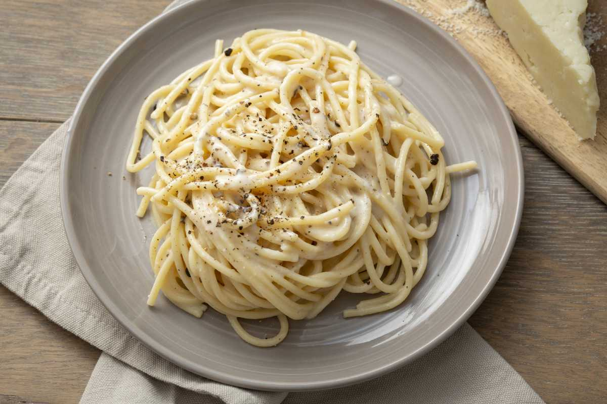

Cacio e Pepe

Description
Learn how to make a perfect cacio e pepe! The secret, in addition to the chemical combination of water and
Pecorino proteins to obtain a cream without lumps, lies in the flavor:
whole peppercorns crushed the same day and plunged into the pan to toast releasing all their pungent aroma;
the pasta whisked slowly and in a controlled way to absorb all the taste of Pecorino romano cheese when you add the cream.
Prepare and enjoy: this is another rule to taste the best spaghetti cacio e pepe! Get the forks ready!
Ingredients
- 320g Spaghetti
- 200g Pecorino Romano cheese - medium seasoning, to be grated
- Black pepper to taste - corns
- Fine salt to taste
Preparation
- To prepare spaghetti cacio e pepe, first of all grate the Pecorino cheese.
Continue boiling some water in a pan (use about half of what you usually use to cook pasta,
so it will be richer in starch) and when it boils you can add salt to taste.
Once salted, you can cook the spaghetti
- In the meantime, pour the whole peppercorns on a cutting board,
then crush them with a meat pestle or a grinder. This will release more of the pungent scent of the pepper
- Pour half of the crushed pepper into a large non-stick pan, toast over low heat stirring with a wooden spoon,
then add a couple of ladles of cooking water.
The bubbles you see appearing are from the starch contained in the water
- rain the spaghetti when it is very al dente (keeping the cooking water aside to use later) and pour the pasta directly
into the pan with toasted pepper;
it will continue cooking with the seasoning
- Stir the pasta continuously with the kitchen tongs to make it “breathe" and add a ladle of water or two if necessary,
to continue cooking. Keep pouring a ladle of water only when needed
(when you see that the pan is almost completely dry) and stir with kitchen tongs
- In the meantime, when the pasta is ready, prepare the Pecorino cream
(don't start this operation before because the cream would get too thick):
pour about half of the grated Pecorino cheese into a bowl
- Add a ladle of cooking water to the grated Pecorino cheese.
Stir vigorously with a whisk and add more water when needed. Then add the remaining half of the Pecorino cheese,
keeping a little bit aside to garnish later. Add a little more water if needed: at this stage
you will have to carefully adjust the amount of
Pecorino cheese to the water to obtain a cream of the right consistency and without lumps.
- Finish cooking your pasta, adding a little more hot water if necessary; before adding the Pecorino cream,
briefly stir the cream by placing the bowl over the steam of the pan with hot water, always stir with the whisk,
so as to bring the cream back to a temperature similar to the one of your pasta if necessary.
Turn the heat off under the pan with spaghetti and pour in the Pecorino cream
- While pouring the Pecorino cream onto your spaghetti, stir it continuously with the kitchen tongs,
pour the Pecorino you kept aside in too, stir and sauté the pasta again,
then transfer your spaghetti cacio e pepe to a plate and season with the remaining pepper,
enjoy immediately in all its creaminess